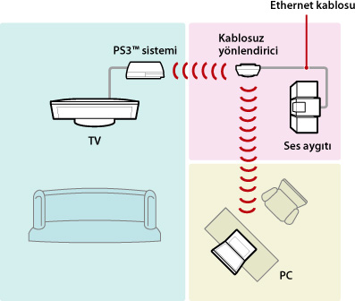
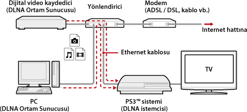
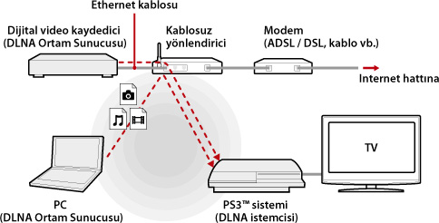
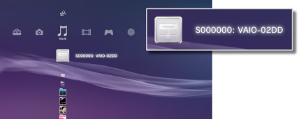
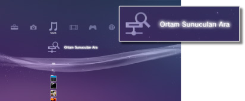

Ayarlar > Ağ Ayarları > Ortam Sunucusu Bağlantısı
Ortam Sunucusu Bağlantısı
DLNA destekleyen aygıta bağlanmak için ayarlar yapın.
| Etkinleştir | DLNA destekleyen aygıta bağlantıyı etkinleştirir. |
|---|---|
| Devre dışı bırak | DLNA destekleyen aygıta bağlantıyı devre dışı bırakır. |
DLNA Hakkında
DLNA (Digital Living Network Alliance) kişisel bilgisayar, dijital video kaydedici ve TV gibi dijital aygıtların bir ağa bağlanmasına ve bağlı diğer DLNA uyumlu aygıtlarla veri paylaşmasına olanak tanıyan bir standarttır.
DLNA uyumlu aygıtlar iki farklı işlev görür. "Sunucular" görüntü, müzik veya video dosyaları gibi ortamı dağıtır ve "istemciler" ortamı alır ve oynatır. Bazı aygıtlar her iki işlevi de gerçekleştirir. Bir PS3™ sistemini bir istemci olarak kullanarak görüntüler görüntüleyebilir veya ağ üzerinden DLNA Ortam Sunucusu işlevselliği olan bir aygıtta depolanan müzik veya video dosyaları çalabilirsiniz/oynatabilirsiniz.

PS3™ sistemini ve DLNA Ortam Sunucusunu bağlama
PS3™ sistemini ve DLNA Ortam Sunucusunu kablolu veya kablosuz bağlantı kullanarak bağlayın.
Kablolu bir bağlantı kullanılarak kişisel bir bilgisayara bağlanma örneği

Kablosuz bir bağlantı kullanılarak kişisel bir bilgisayara bağlanma örneği

Bir DLNA Ortam Sunucusunu Ayarlama
DLNA Ortam Sunucusunu PS3™ sisteminin kullanabileceği şekilde ayarlayın. Aşağıdaki aygıtlar DLNA Ortam Sunucuları olarak kullanılabilirler.
- Sony dışında şirketlerin ürünlerini içeren DLNA standardını destekleyen aygıtlar
- Windows Media Player 11 yüklü kişisel bilgisayarlar (PC'ler)
DLNA Ortam Sunucusu olarak bir AV aygıtı kullanırken
Bağlı aygıtın içeriğini paylaşımlı erişim için kullanılabilir hale getirmek için DLNA Ortam Sunucusu işlevini etkinleştirin. Ayar yöntemi bağlı aygıta göre değişir. Ayrıntılar için, aygıtla birlikte verilen yönergelere bakın.
Bir Microsoft Windows kişisel bilgisayarını DLNA Ortam Sunusu olarak kullanırken
Bir Microsoft Windows kişisel bilgisayarı Windows Media Player 11 işlevleri kullanılarak bir DLNA Ortam Sunucusu olarak kullanılabilir.
1. |
Windows Media Player 11'i başlatın. |
|---|---|
2. |
[Kitaplık] menüsünden [Medya Paylaşımı]'nı seçin. |
3. |
[Medya paylaşma] öğesini işaretleyin. |
4. |
[Medya paylaşma] onay kutusunun altındaki aygıtlar listesinden veri paylaşmak istediğiniz aygıtları seçin ve sonra [İzin Ver]'i seçin. |
5. |
[Tamam]'ı seçin. |
İpuçları
- Microsoft Windows kişisel bilgisayarında Windows Media Player 11 varsayılan olarak yüklü değildir. Windows Media Player 11'i yüklemek için Microsoft Web sitesinden yükleyiciyi indirin.
- Windows Media Player 11'i kullanma hakkında ayrıntılar için Windows Media Player 11 Yardım özelliğine bakın.
- Bazı durumlarda, orijinal DLNA Ortam Sunucusu yazılımı kişisel bilgisayara yüklenebilir. Ayrıntılar için, bilgisayarla birlikte verilen yönergelere bakın.
DLNA Ortam Sunucusu içeriğini oynatma
PS3™ sistemini açtığınızda, aynı ağdaki DLNA Ortam Sunucuları otomatik olarak algılanır ve algılanan sunucuların simgeleri  (Fotoğraf),
(Fotoğraf),  (Müzik) ve
(Müzik) ve  (Video) altında görüntülenir.
(Video) altında görüntülenir.
1. |
 |
|---|---|
2. |
Oynatmak istediğiniz dosyayı seçin. |
İpuçları
- PS3™ sistemi ağa bağlanmalıdır. Ağ ayarları hakkında ayrıntılar için, bu kılavuzdaki
 (Ayarlar) >
(Ayarlar) >  (Ağ Ayarları) > [İnternet Bağlantısı Ayarları] konusuna bakın.
(Ağ Ayarları) > [İnternet Bağlantısı Ayarları] konusuna bakın. - IP adresi ayırma yöntemi ağ ortamı ayarları altında OtoIP'den DHCP ayarına değiştiğinde,
 (Ortam Sunucuları Ara) altındaki sunucular için başka bir arama gerçekleştirin.
(Ortam Sunucuları Ara) altındaki sunucular için başka bir arama gerçekleştirin. - DLNA Ortam Sunucusu simgesi yalnızca (Ayarlar) > (Ağ Ayarları) altında [Ortam Sunucusu Bağlantısı] etkinleştirildiğinde görüntülenebilir.
- Görüntülenen klasör adları DLNA Ortam Sunucusuna göre değişir.
- DLNA Ortam Sunucusu'na bağlı olarak bazı dosyalar oynatılamayabilir veya oynatma sırasında gerçekleştirilebilecek işlemler kısıtlanabilir.
- Telif hakkı korumalı içeriği oynatamazsınız.
- Veriler için DLNA ile uyumlu olmayan sunucularda depolanan dosya adlarının dosya adı yanına bir yıldız eklenir. Bazı durumlarda, bu dosyalar PS3™ sisteminde oynatılamayabilir. Ayrıca, dosyalar PS3™ sisteminde oynatılabilse bile dosyaları başka aygıtlarda oynatmak mümkün olmayabilir.
- Video içeriğini oynatmak için bir HDMI kablosu kullanarak sistemi (CECH-4200 serisi veya üstü) bağlamanız gerekir.
DLNA Ortam Sunucularını manüel olarak arama
Aynı ağda DLNA Ortam Sunucuları için bir arama başlatabilirsiniz. PS3™ sistemi açıldığında hiç DLNA Ortam Sunucusu algılanmadıysa bu özelliği kullanın.
(Fotoğraf), (Müzik) veya (Video) altında (Ortam Sunucuları Ara) öğesini seçin. Arama sonuçları görüntülendiğinde ve XMB™ menüsüne döndüğünüzde, bağlanabilen bir DLNA Ortam Sunucuları listesi görüntülenebilir.

İpucu
(Ortam Sunucuları Ara), yalnızca (Ayarlar) altında (Ağ Ayarları) içinde [Ortam Sunucusu Bağlantısı] etkinleştirildiğinde görüntülenir.